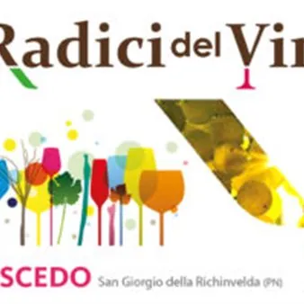

da ven 9 ott a dom 11 ott
Le Radici del Vino
Le Radici del Vino si indica una storia, un territorio, un'eccellenza e l'evento che cerca di raccontare tutto questo.L'evento, pensato per tutti, raccoglie un'enormità di iniziative volte a raccontare la nostra storia, far innamorare del nostro territorio ed emozionare con…
 Indicazioni
Indicazioni
- Costi e prenotazioni
- Costo non indicato · Prenotazione non indicata
- Programma
- Programma da verificare. Apri la fonte ufficiale per orari e possibili aggiornamenti.
- In caso di maltempo
- Nessuna indicazione specifica pubblicata.
- Note
- Acquisito automaticamente dalla fonte.
L’EVENTO
Descrizione completa
VENERDÌ 9 OTTOBRE
16.00 Apertura “9a Fiera Viticoltura d’Eccellenza”
18.00 Inaugurazione “9a Fiera Viticoltura d’Eccellenza” e premiazione Concorso “Festival della Ribolla gialla”
19.00 Aperitivo in musica jazz con il duo “ALESSIA TREVISIOL e SHUNSUKE SENDA”
19.00 Apertura “Arena del Gusto”
SABATO 10 OTTOBRE
09.00 Apertura “9a Fiera Viticoltura d’Eccellenza”
09.00 Trenino turistico con visita guidata del VCR Research Center
12.00 Apertura “Arena del Gusto”
16.30 Apertura “Piazza dei Sapori” numerosi espositori gastronomici di tutta la Regione
17.30 La Cultura del Vino nel Friuli e nella Religione a cura di Enos Costantini e Don Ivan Bettuzzi
19.00 Aperitivo in musica con i “NIGHT E SWING QUARTET”
22.00 Musica con Dj Set
DOMENICA 11 ottobre
08.00 8a Marcia “Le Radici del Vino” percorsi di 7-13 km
09.00 Apertura “Mercato Artigianale” e “Piazza dei Sapori”
11.00 Il vino nella cultura Friulana dal Medioevo alle Osterie incontro con Angelo Floramo
12.00 Musica itinerante con gli “UNBRASSED BAND” per le vie della manifestazione
18.30 Apertura “Arena del Gusto”
18.30 Aperitivo in musica con i “BOSSA LOCA”
IL PROGRAMMA
Programma e orari
Appuntamenti raccolti dalle fonti elencate. Dove manca un orario, non è ancora disponibile in questa scheda.
Programma pubblicato
- 16.00 Apertura “9a Fiera Viticoltura d’Eccellenza”
- 18.00 Inaugurazione “9a Fiera Viticoltura d’Eccellenza” e premiazione Concorso “Festival della Ribolla gialla”
- 19.00 Aperitivo in musica jazz con il duo “ALESSIA TREVISIOL e SHUNSUKE SENDA”
- 19.00 Apertura “Arena del Gusto”
- 09.00 Apertura “9a Fiera Viticoltura d’Eccellenza”
- 09.00 Trenino turistico con visita guidata del VCR Research Center
- 12.00 Apertura “Arena del Gusto”
- 16.30 Apertura “Piazza dei Sapori” numerosi espositori gastronomici di tutta la Regione
- 17.30 La Cultura del Vino nel Friuli e nella Religione a cura di Enos Costantini e Don Ivan Bettuzzi
- 19.00 Aperitivo in musica con i “NIGHT E SWING QUARTET”
- 22.00 Musica con Dj Set
- 08.00 8a Marcia “Le Radici del Vino” percorsi di 7-13 km
- 09.00 Apertura “Mercato Artigianale” e “Piazza dei Sapori”
- 09.00 Trenino turistico con visita guidata al VCR Research Center
- 11.00 Il vino nella cultura Friulana dal Medioevo alle Osterie incontro con Angelo Floramo
- 12.00 Musica itinerante con gli “UNBRASSED BAND” per le vie della manifestazione
- 18.30 Apertura “Arena del Gusto”
- 18.30 Aperitivo in musica con i “BOSSA LOCA”
INFORMAZIONI UTILI
Prima di partire
- Controllare la fonte prima di partire.
ORGANIZZAZIONE